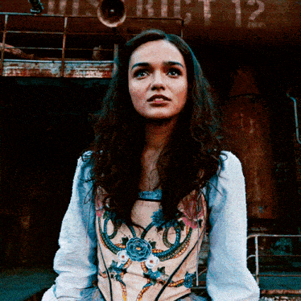
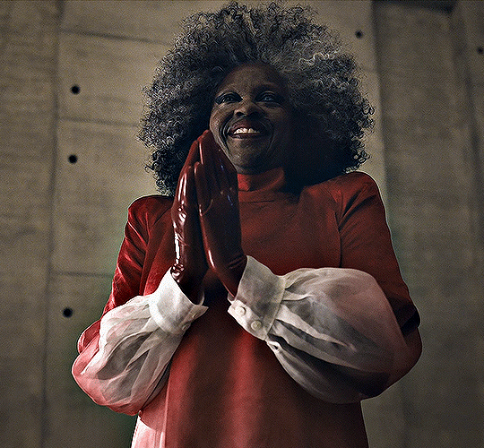

A Cantiga dos Passaros e das Serpentes é um romance distópico de ação e aventura da autora americana Suzanne Collins. É um spin-off e uma prequela da trilogia Jogos Vorazes. Foi lançado em 19 de maio de 2020, pela Scholastic.
De acordo com a autora o trabalho vai "explorar o estado natural, quem somos e o que nos tornamos quando necessario".
A Cantiga dos Pássaros e das Serpentes é um prelúdio de Jogos Vorazes, situado aproximadamente 64 anos antes do período de Katniss Everdeen, que não deve aparecer. O foco aqui é no jovem Coriolanus, antes de se tornar o temido Presidente Snow.Na trama, a guerra entre os distritos e a Capital terminou há aproximadamente uma década. Snow tem 18 anos e possui várias lembranças do conflito. Além disso, sua família perdeu bastante dinheiro durante o período e há até dificuldade para comprar comida. Apesar do nome “Snow” ter perdido prestígio na Capital, o protagonista é escolhido para uma posição importante na nova edição dos Jogos: ele será mentor de um tributo durante os Jogos, e a escolhida é Lucy Gray, do Distrito 12. O filme também deve mostrar como eram feitas as primeiras edições dos Jogos Vorazes, que começaram de maneira ainda mais sórdida do que os fãs já conhecem.
Filmes da saga:


Livros da Saga:


É a manhã da colheita que dará início aos décimos Jogos Vorazes anuais. Na Capital, Coriolanus Snow, de dezoito anos, está se preparando para sua única chance de glória como mentor nos Jogos. A outrora poderosa casa de Snow passou por tempos difíceis, seu destino depende da pequena chance de que Coriolanus seja capaz de encantar, enganar e manobrar seus colegas estudantes para orientar o tributo vencedor. As probabilidades estão contra ele. Ele recebeu a tarefa humilhante de ser mentor do tributo feminino do Distrito 12, o mais baixo dos baixos. Seus destinos agora estão completamente interligados - cada escolha que Coriolanus faz pode levar a favor ou fracasso, triunfo ou ruína. Dentro da arena, será uma luta até a morte. Fora da arena, Coriolanus começa a sentir pena de seu tributo condenado... e deve pesar sua necessidade de seguir as regras contra seu desejo de sobreviver, não importa o que aconteça."
 |
 |
|---|
Personagens:
|  | Lucy Gray Baird é o tributo feminino do Distrito 12, uma favorita do Capital, e mais tarde se tornou a vencedora dos 10º Jogos Vorazes. Seu mentor foi Coriolanus Snow, um aluno de alto desempenho na Academia."Você não tira minha audácia. Não me impede de falar. Pode usar suas falácias, E tomar naquele lugar. Nada que você possa tirar de mim merecia ser guardado." — Lucy Gray canta em sua colheita. |
|---|
| Coriolanus Snow foi um presidente tirâno de Panem. Em sua juventude, ele era conhecido pelo apelido de Coryo, originalmente dado a ele por sua prima, Tigris. Antes de se tornar presidente, ele frequentou a Academia na Capital, onde foi mentor do tribudo vencedor do 10º Jogos Vorazes, Lucy Gray Baird. Mais tarde, ele passou para estudos militares avançados na Universidade. Ele também serviu por um breve período nos Pacificadores, demonstrando tal aptidão que fez um teste com sucesso para um programa de elite para se tornar um oficial dos Pacificadores, embora no final das contas ele não tenha seguido esse caminho. Enquanto frequentava a Universidade e estudava estratégia militar avançada, ele também serviu como aprendiz de Gamemaker, instituindo rapidamente várias novas reformas nos Jogos, incluindo a criação da Vila dos Vitoriosos. |  |
|---|
|  | Volumnia Gaul, conhecida como Dra. Gaul, foi a Gamemaker Chefe dos 10º Jogos Vorazes, bem como instrutora na Universidade, embora às vezes também prestasse seus serviços à Academia. Ela também foi a mente por trás da divisão de armas experimentais da Capital, com base na Cidadela. Ela começou sua carreira como obstetra, mas descobriu que não era para ela, pois os pais queriam garantias que ela sentia que não podiam dar. Ela era uma mulher cruel que criou várias mutações distorcidas em um laboratório subterrâneo. |
|---|
Casca Highbottom era o Reitor da Academia e o criador não intencional dos Jogos Vorazes. Quando a criação dos jogos foi oficialmente anunciada, Highbottom serviu como a face pública do evento.Dez anos antes da rebelião dos Distritos contra a Capital de Panem, Casca Highbottom estudou na Academia com seu amigo Crassus Snow, pai de Coriolanus. Os alunos foram encarregados pela professora Dr. Volumnia Gaul de projetar uma punição política para os inimigos conquistados de uma nação que garantisse que eles jamais esqueceriam seus crimes passados. |
|---|
 |
Em Jogos Vorazes, conhecemos Tigris em A Esperança. Lá ela é descrita como uma estilista fracassada que, na tentativa de se manter em alta na moda da Capital, acabou passando por cirurgias plásticas severas, assumindo a aparência de um tigre. Barrada da alta sociedade, ela abriga Katniss e os outros rebeldes, auxiliando o grupo em seu golpe contra Snow. Em A Cantiga dos Pássaros e das Serpentes, descobrimos que Tigris era prima de Coriolanus Snow. Passando por grandes dificuldades ao lado dele, a garota foi essencial para que ele conquistasse grandes vitórias em seu jogo político. Contudo, não há uma explicação para como ela acabou se tornando a figura que conhecemos na trilogia principal. |
|---|
Sejanus Plinth era um cidadão da Capital, anteriormente do Distrito 2, e mentor do tributo masculino do Distrito 2, Marcus, durante os 10º Jogos Vorazes. Ele foi um dos 24 veteranos de melhor desempenho da Academia selecionados para uma função de mentor. Ele era um amigo próximo de Coriolanus Snow. |
 |
|---|
Contextualizando:
No livro A Cantiga dos Passaros e das Serpentes somos apresentados a décima edição dos Jogos Vorazes, uma espécie de desafio, para quem não está familiarizado, onde um garoto e uma garota são escolhidos de cada um dos doze distritos de Panem para lutarem até a morte na arena. Dessa maneira, nesse jogo há sempre apenas um vitorioso, o sobrevivente.
7 tópicos importantes sobre o filme:
Ou seja, não esperem encontrar personagens que a franquia nos presenteou.
Lucy Gray, a personagem que dá voz a garota do Distrito 12, é bem diferente do que esperávamos para quem já é fã da franquia. Pois, apesar da aparência e em alguns momentos ela lembrar a Katniss, ela também é bem mais humana, sensível e leve, mesmo com o ardor da revolta que envolve ambas.
Pois, como vimos na trilogia original, há sempre personagens quebrados e complexos construídos pela mente brilhante da autora. Como Finnick, Johana e Peeta; nessa história encontramos personagens como Sejanus e Tigris. Ambos, muito próximos do Snow.
A Dra. Gaul, a verdadeira mente que guia as atitudes mais tenebrosas de Snow. Creio que as suas ideias e sua mente estão em outro patamar. Ela que dá sentido ao livro. É uma vilã que nos facilita tanto odiar quanto entender seu lado.
É uma história que se passa em um contexto pós guerra, e o inicio dos jogos, além de nesse filme termos várias respostas sobre os outros filmes.